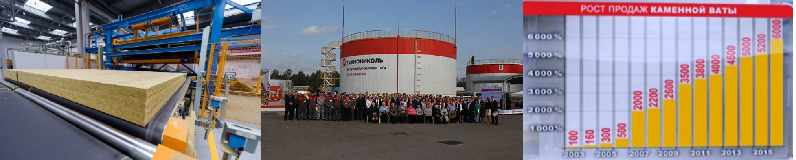
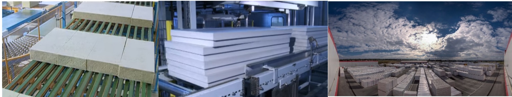

Повышение производительности труда и Lean технологии.
Предприятие с поточным производством и непрерывным циклом: Опыт лидера (Корпорация «ТехноНиколь»). Рязань, 1-2 октября 2019 г.

Россия существенно отстает от других стран по производительности труда. Не сократив разрыва, страна и субъекты ее экономики не могут претендовать на достойные результаты в мировом экономическом соревновании. Резервы для сокращения есть, но часто их просто не замечают.
Хорошее оборудование не решает задачи.
Прежде всего необходимо налаживание бизнес-процессов.
Одна из самых «продвинутых» российских компаний в деле повышения производительности труда — корпорация «Технониколь», крупнейший производитель
строительных материалов в России. За девять лет она смогла увеличить свою производительность
с 8–9 млн рублей в год на человека (и тогда это было втрое выше среднероссийской) до 14–15 млн
рублей в год, а на одном из заводов корпорации – до 44,56 млн (и теперь это уже выше европейской), против средней по отрасли в России 2,6 миллиона; статистически доказанная эффективность использования оборудования повышена с 66 до 89 процентов. Корпорация ТехноНИКОЛЬ - это 93-е место в рейтинге Forbes, свыше 40 заводов на территории РФ, стран СНГ и дальнего зарубежья, поставляет продукцию вплоть до Новой Зеландии.
Общий экономический эффект Lean программы за счет исключения и сокращения
различных видов потерь (только на одном направлении производства компании) составил около
7 миллиардов рублей за период с 2010 по 2017 годы.
Опыт ТехноНИКОЛЬ в поиске скрытых ресурсов позволил Корпорации увеличивать темпы роста не только в годы экономической стабильности, но и в кризисные времена. Высокая производительность — это надежный рычаг роста компании. Хорошее оборудование не
решает задачи. Прежде всего необходимо налаживание бизнес-процессов. Этих бизнес-
процессов десятки. Чтобы выстроить приоритеты, надо следовать двум целям: всегда стремиться к качеству и всегда стремиться к сокращению времени и ресурсов, которые тратится на создание продукта и доставку его клиенту.
В ходе стажировки будет рассмотрен 10-летний опыт Технониколь в направлениях, давших максимальный эффект в достижении этих результатов:
Бережливое производство – не сокращение затрат, не экономия, а анализ и
последовательное сокращение потерь.
Выравнивание производства, планирование на нестабильном рынке:стратегическое
планирование –бизнес-планирование - объемное планирование продаж и операций – скользящее недельное планирование – оперативное планирование; разработка сценариев развития событий с учетом внешней экономической и политической конъюнктуры, оперативная реакция на состояние рынка). Единое информационное пространство компании, ОЦО.
Картирование потока создания ценности:карта актуального состояния – выявление потерь – карта будущего/желаемого состояния потока создания ценности (отгрузка – производство – сырье, материалы, оборудование); результат за 1 год: рост производительности труда на участке в два раза, снижение запасов сырья на 8,6%, а запасов готовой продукции — на 70,5%; сокращение производственных и складских площадей более чем на 30%.
Быстрая переналадка:менять валы с ножами для резки меньше, чем за 5 минут вместо 12 часов; 7-8 наименований продукции за смену вместо 1-2; ежегодная экономия от сокращения времени переналадок - около 200 млн рублей.
Стандартные операционные процедуры (СОП):требования к представлению СОП,
примеры карты СОП
Организация рабочего пространства - 5C:стандарты рабочих мест, рабочие документы 5С.
Непрерывные улучшения: два уровня проведения улучшений; работа с предложениями, механизм принятия решений; вовлечение сотрудников; проектный офис, штурм-прорыв.
Оптимизация кадровых процессов - рост производительности труда:«производство
кадров» (отбор, обучение, адаптация; кого лучше не нанимать, даже если кадровый дефицит) - распределение - использование персонала; КПЭ - всем и другие «секреты»
Общие принципы: три важнейшие вещи для отрыва от конкурентов— высокое
качество продукции, низкие затраты на ее создание, высокая производительность труда; следуй за лидером; вкладывай в разработки и в клиента; «пилоты» и другое.
Ведущие семинара, сопровождающие на производственной площадке – ключевые сотрудники предприятия, ответственные за развитие производственной системы и внедрение бережливого производства.
Стоимость участия 1 сотрудника – 58 500 руб., что включает участие во всех мероприятиях стажировки, трансфер Москва-Рязань-Москва и в ходе стажировки, одноместное проживание в отеле, двухразовое питание, экскурсию по историческим местам Рязани, выдачу свидетельства об участии
в стажировке.

ИЗ ОТЗЫВОВ О НЕДАВНЕЙ АНАЛОГИЧНОЙ СТАЖИРОВКЕ:
Что вам понравилось в стажировке?
Ведущий-практик в деле внедрения Бережливого производства, с богатым опытом и мощной позитивной энергетикой; отлично работает с аудиторией, имеющей различный производственный опыт; останавливается на особо актуальных для слушателей проблемах, открыто и честно отвечает на вопросы "
В лекционной части стажировки собрано лучшее из различных концепций Бережливого производства "
На производственных площадках Технониколя - технологичность и степень автоматизации процессов производства и учета; порядок и чистота, корпоративная культура: начальники крупных подразделений с готовностью общаются со слушателями, охотно делятся опытом решения возникающих проблем. "
Очень четкий тайминг всего мероприятия "
Комфортабельный конференц-зал и отель; отличное питание. "
Удобно организованная логистика доставки к месту проведения стажировки.